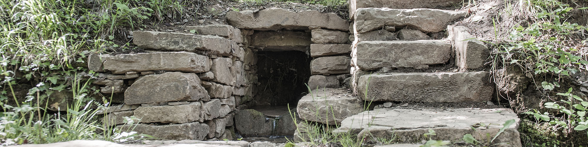
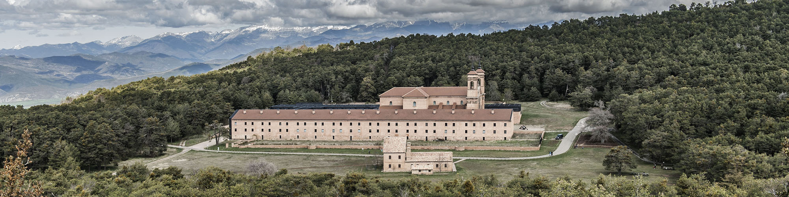
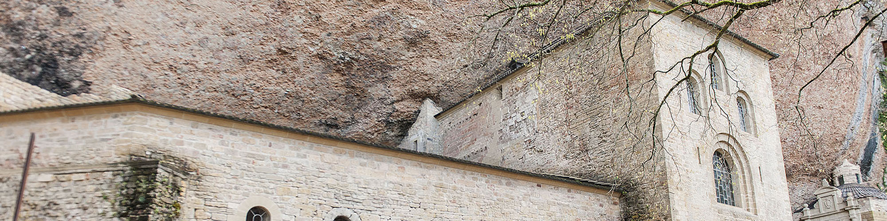
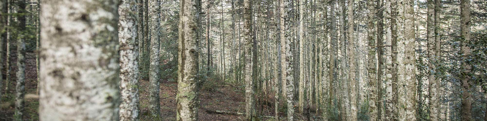
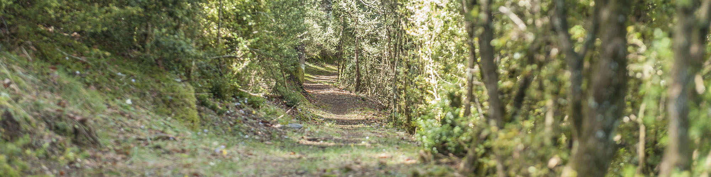
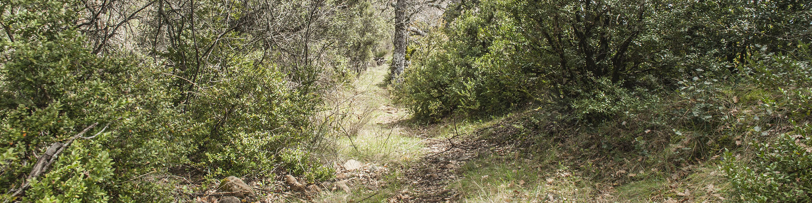

RUTAS
Selecciona una dificultad o ruta
01 - Cascada de la Tosquera

02 - Casa de la Mora

03 - Senda de las Faxuelas

04 - Sendas Desconocidas

05 - Ermitas y Monasterios

06 - Balcón de los Pirineos
07 - San Juan Bajo

08 - Paco de San Vicente

09 - Ermita de San Salvador

10 - Senderos de Binacua
11 - Camino de Las Fuentes

12 - Ralla de Cuculo

13 - Media Maratón

14 - Rompepiernas

15 - Maratón